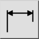
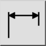
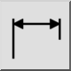
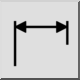

Poziomy
Pasek narzędziowy / ikona:
 

Menu: Wymiar > Poziomy
Skrót: D, H
Polecenia: dimhor | dimhorizontal | dh
Jest to tłumaczenie automatyczne.
Pasek narzędziowy / ikona:
 

Menu: Wymiar > Poziomy
Skrót: D, H
Polecenia: dimhor | dimhorizontal | dh
Narzędzie to zapewnia wygodę i zachowuje się zasadniczo jak narzędzie dla obróconych wymiarów. Jedyną różnicą jest to, że kąt jest ustawiony na ° 0° (poziomo).